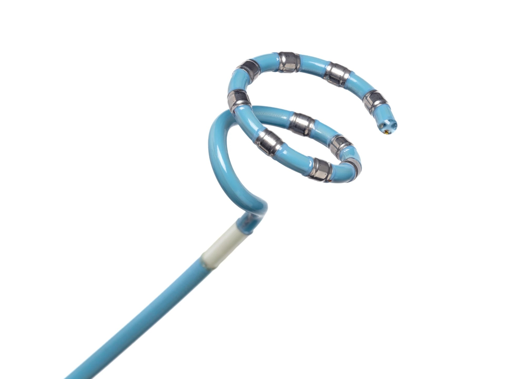
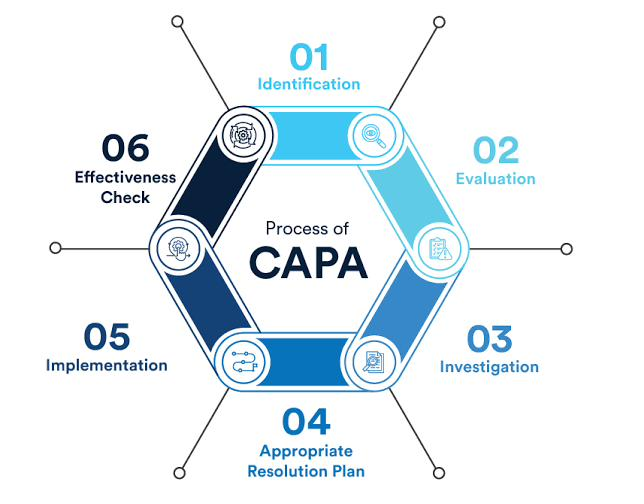
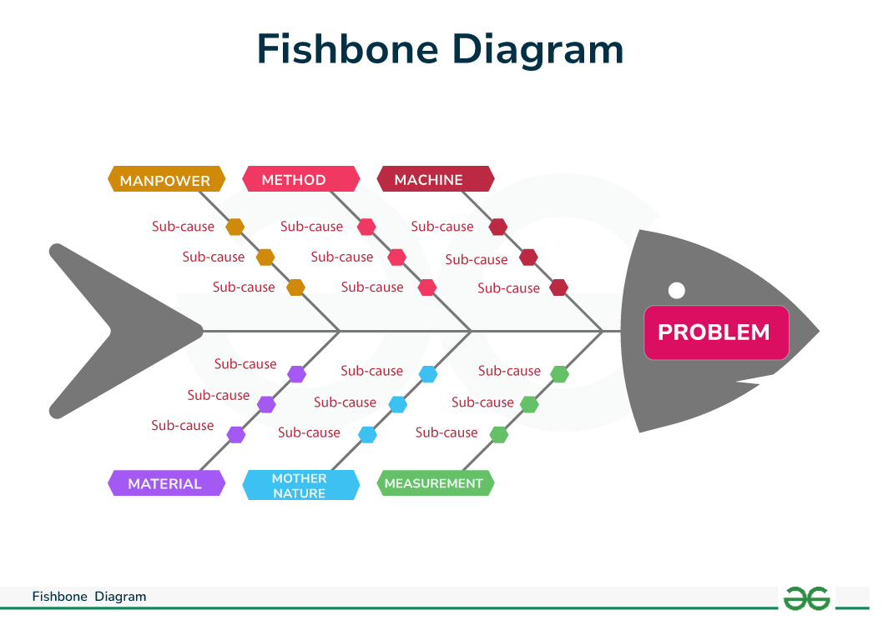

Joined the New Product Development quality team supporting VARIPULSE, J&J's pulsed field ablation catheter, right as production was ramping. A ramping catheter line is unforgiving: every nonconformance is expensive, every unexplained failure threatens the schedule, and every manual process becomes a bottleneck the moment volume increases. Over the course of the summer, four distinct problems all needed solving in parallel: a live nonconformance was actively costing money, a mystery cracking defect was showing up in the field, the qualification testing process was too slow and error-prone to scale, and nobody had a reliable way to trace where components actually were across R&D, supply chain, and packaging.

A nonconformance was actively costing the line real money on every affected work order. Rather than patch the symptom, I developed a full CAPA (Corrective and Preventive Action) and implemented sterilization threshold verification controls that closed the gap at its root, mitigating $60,000+ in losses per work order going forward.
Catheter tips were cracking in the field with no clear explanation, a genuine mystery-failure investigation. I built out a Fishbone diagram to systematically work through every possible cause, then ran a variable Gage R&R study to test whether the measurement system itself could be trusted. It couldn't: the analysis traced the defect back to a flaw in the supplier's own measurement system, not the manufacturing process. Fixing the actual root cause, not just the symptom, cut field failures by roughly 35%.
The catheter manufacturing qualification process spanned 20 separate tests and 80+ pages of procedure, slow, and every extra page was another chance for operator error. Using Design of Experiments (DOE) to isolate which variables actually mattered, I re-engineered and simplified the test scripts, trimming the process down to what was genuinely necessary, reducing operator error by 18% without sacrificing rigor.
NPD components were moving between R&D labs, supply chain inventory, and packaging with no shared system tracking where anything actually was, leading to redundant orders and wasted spend. I designed and stood up a Kanban-based component traceability system spanning all three functions, giving every team real-time visibility into component location and status, cutting duplicate component orders by 32% per month.
The two core methodologies behind this work, visualized: the CAPA process used to close out the sterilization nonconformance, and the Fishbone diagram used to systematically trace the catheter tip cracking defect back to its root cause.


Four separate fires, four separate fixes, but every one of them traced back to a hard number by the end of the summer.
This role combined statistical rigor, Gage R&R, DOE, Fishbone analysis, with cross-functional systems building, tracing a supplier's measurement defect back to its source and then designing a traceability system that touched R&D, supply chain, and packaging all at once. Four different disciplines, one summer, one production line that came out of it running measurably better.